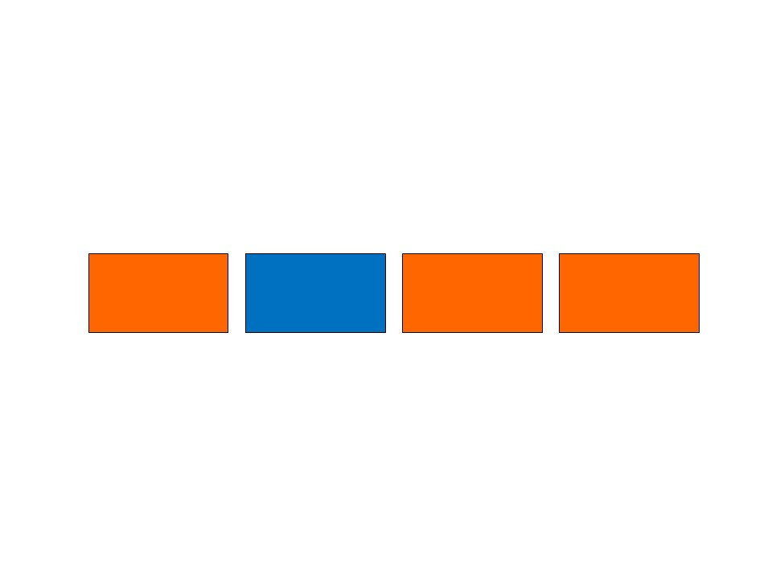
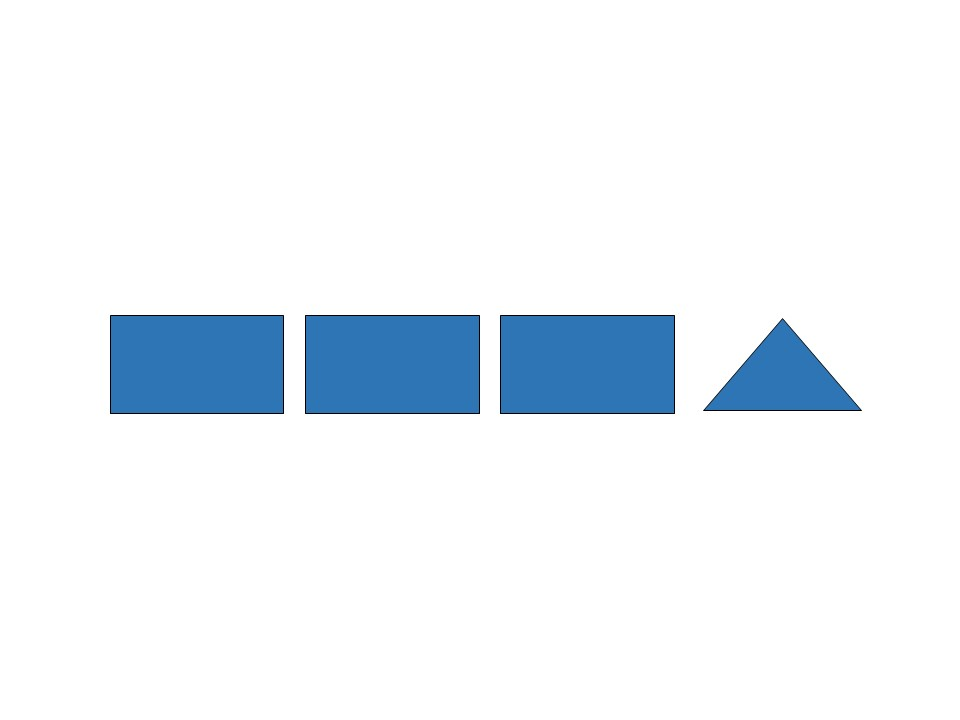
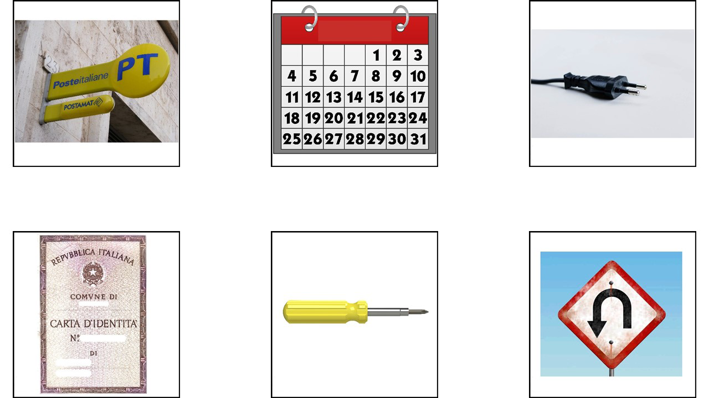
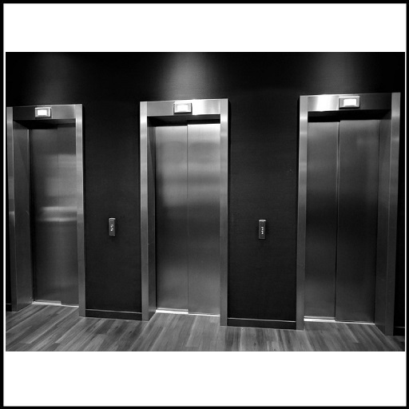
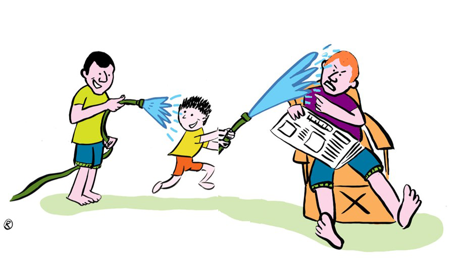
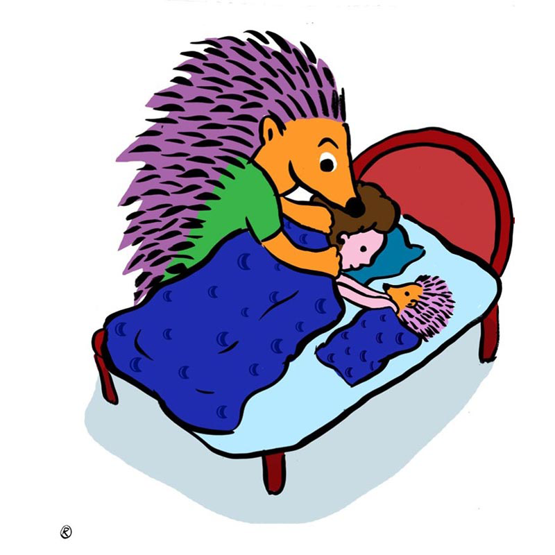
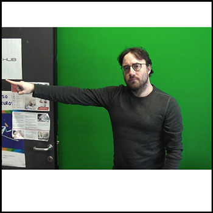

This is the only not-linguistic task. It has the purpose to evaluate general cognitive abilities of the
participants.
The task is to find the intruder in a set of 4 pictures (e.g. a cow among three horses).
Two training items and 28 target items compose the task.
Execution time is about 5 minutes.
As an example, we report here the training items (they are simpler than the target items because in the target
sets no element is repeated):


The purpose of this task is to evaluate lexical comprehension where the target and the distractors are
phonologically related signs. Participants are required to identify which picture out of six corresponds to the
target sign. The non-target pictures are phonological competitors, namely they represent signs that are
phonologically close to the target sign.
One training item and 22 target items compose the task.
Execution time is about 5 minutes.
As an example, we report here the training item (the sign is ID CARD):

The purpose of this task is to evaluate lexical comprehension where the target and the distractors are
semantically related signs. Participants are required to identify which picture out of eight corresponds to the
target sign. The non-target pictures are semantic competitors, representing concepts that are semantically
related to the target sign.
Two training items and 18 target items compose the task.
Execution time is about 5 minutes.
As an example, we report here one training item (the sign is PRINTER):
This is a comprehension and production task that evaluates lexical competence. Participants are required to
watch a sign and produce a sign with the opposite meaning. Target pairs are nouns, verbs, adjectives and
adverbs.
Three training pairs and 17 target pairs compose the task.
Execution time is about 10 minutes.
As an example, we report here one training pair (the given sign is GO OUT and the expected answer GO IN).
Given sign:
Expected answer:
This task evaluates lexical production. Participants are required to name a series of pictures typically
representing objects. The expected answers are nouns.
Two training and 43 target pictures compose the task.
Execution time is about 15 minutes.
As an example, we show here a training picture and the expected answer (ELEVATOR):

This is a sentence-to-picture matching task aiming at assessing the ability to comprehend content questions
(also called wh-questions). The interrogative pronoun is either the subject or the object.
The pictures represent a sequence of three characters (first and third alike, second different) with the first
character performing an action on the second, and the second character performing the same action on the third.
The task is to select the character who represents the answer to the question.
Forty target questions and 24 filler questions compose the task. The items are divided in 2 lists (32 items
each) and each list is administered in a different block. For each block there are 3 training items.
Execution time is about 15 minutes per block.
As an example, we report here one training item:
Intro:
C’È ADULTO ADULTO DUE, BAMBINO UNO
THERE-IS ADULT ADULT TWO, CHILD ONE
Question:
BAMBINO ACQUA INNAFFIARE ADULTO QUALE?
CHILD WATER WATER ADULT WHICH?
Picture:

This sentence-to-picture matching task assesses the ability to comprehend subject and object relative clauses.
Participants are required to watch a video with a request embedding a relative clause (’point to the dog that is
chasing the cat/’point to the cat that the dog is chasing’) and need to answer pointing to the correct character
in a picture. The pictures represent a sequence of three characters (first and third alike, second different)
with the first character performing an action on the second, and the second character performing the same action
on the third.
Forty target requests with a relative clause and 24 filler request compose the task. The items are divided in 2
lists (32 items each) and each list is administered in a different block. For each block there are 3 training
items.
Execution time is about 15 minutes per block.
As an example, we report here one training item:
RICCIO CL-RICCIO BAMBINO LETTO COPERTA-COPRIRE PE-RICCIO TOCCARE
HEDGEHOG CL-HEDGEHOG CHILD BED BLANKET-COVER PE-HEDGEHOG TOUCH
Picture:

This is a true or false task assessing the comprehension of agreement verbs, namely verbs are spatially modified
to mark their arguments (for example, they can involve a path movement from the position in space associated to
the subject from the position in space associated to the object).
Participants watch a not-linguistic video of a situation where three people interact. After the video, a
sentence in LIS is shown and this can correctly represent the non-linguistic situation or report the situation
with verbal agreement errors (for example, in the non-linguistic video person 1 has given something to person 2
but in the LIS sentence it is the other way around). Participants’ task is to decide if the sentence matches the
situation or not.
The task is composed by 18 agreement verbs that occur 4 times each (in a correct sentence, in two sentences with
an agreement error and in a filler sentence). The total number of items is 72. They are divided in 2 lists (36
items each) distributed in 2 blocks. Each block is preceded by two training items.
Execution time is about 10 minutes per block.
As an example, we report here one training item.
Situation:
Sentence (wrong):
PIETRO MASSAGGIARE-ME
PIETRO MASSAGE-ME
This is a sentence-to-picture matching task evaluating the ability to detect change in interpretation under
role-shift. Role-shift is a strategy to report actions, utterances or thoughts of another character by adopting
the perspective of the character rather than the perspective of the signer (often the signer signals the change
of perspective by leaning his/her body or head towards the position associated with the person whose perspective
is being adopted).
Participants watch a video sentence that can be with or without role-shift. Their task is to decide which
picture out of two represents the sentence. The two pictures are very similar and depict the interpretation with
and without role-shift.
The task is composed by 40 items with role-shift and 40 without role-shift, plus 16 fillers to assess whether
participants comply with the task requirements.
The task is administered in 2 blocks. For each block, there are 2 training items.
Execution time is about 20 minutes per block.
As an example, we report here one training item:
IERI IO COLLEGA NOI-DUE INCONTRARE. LEI DIRE-ME: “IO STUDENTE MIO BUTTARE-FUORI”
YESTERDAY I COLLEAGUE WE MEET. SHE ME-TOLD: “I STUDENT MY EXPEL”

Sentence comprehension and production is assessed through a repetition task.
Participants watch a video sentence and are required to repeat it as close as possible.
Two training sentences plus 10 sentences with various degrees of difficulty but comparable length compose the
task.
Execution time is about 10 minutes.
As an example, we report here one training item:
DOMANI IO SPESA ANDARE. LÀ IO FRUTTA VERDURA COMPRARE.
TOMORROW I GROCERY GO. THERE I FRUITS VEGETABLES BUY.